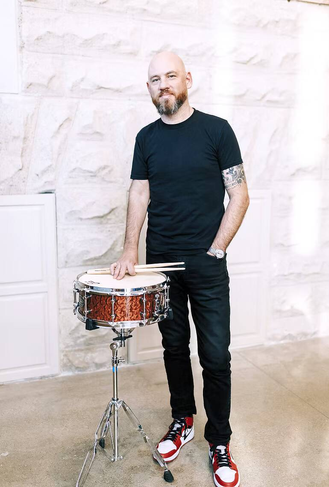

UNLV School of Music presents
FALLPercussion Ensemble Concert
- Date
- Sunday, November 22, 2026
- Time
- 5:30 P.M.
- Venue
- Paul Harris Theater
Alta Ham Fine Arts
University of Nevada, Las Vegas
Please silence your phone and turn your screen brightness all the way down so your neighbors can enjoy the performance.
Program
- José/BeFORe JOHN5 Aurél Holló
- Wired Lynn Glassock Ethan DeSouza, conductor
- Mass John Mackey Joshua Castillo-Romero, conductor
- 4/4 for Four Anthony Cirone Wesley Denkins, conductor
- Après Rebonds Luis Rivera Louie Pereira, coach
- The Beginning of the End of the World Will Alderman
- Under the INfluence Brian Blume
- To Guard a Harmless Bridge World Premiere Adam Hopper (b. 1985) Chandler White, conductor Dr. Zane Douglas, narrator
- Labyrinth Kit Watkins, arr. Mike Myers
Program Notes
José/BeFORe JOHN5Aurél Holló
The basic idea of my piece José was born when I was listening to the recording Oriental Bass by the ethnic contrabass-player Renaud Garcia-Fons. I wondered many times whether it would be possible to present his fundamentally Spanish style with its Arabic and Gypsy effects in an original percussion composition instead of a simple adaptation. My answer to this question is “José.”
Besides Garcia-Fons’s recording I also used a theme by Paco de Lucía in this composition. Marimba has the lead throughout this short character piece almost exclusively: two players standing face to face play especially virtuoso complementary motives. Most of these figures are based on the traditional xylophone music of Africa.
The players use techniques of amadinda and akadinda (traditional percussion instruments from Uganda) yet the scale they cover is typically flamenco-like at the same time. In the end these two players sound a real guitar as well, with the same technique. This rhythmical-melodic source is enriched by the playing of two other musicians who create many interesting and exciting sounds, for example with the Spanish cajón or the favourite instrument of Gypsy folk music, the simple sheet-iron can, and many more. I dedicate this piece of mine to Josep Vicent, former artistic leader of Amsterdam Percussion Group.
— Aurél Holló
WiredLynn Glassock
Winner of the 2004 PAS Composition Contest for percussion quartet, Lynn Glassock’s Wired is a challenging work that calls for a large multiple-percussion setup for each player. Oscillating between aggression and sensitivity, Glassock weaves melodic lines with wood, metal, and skin textures through multiple time signatures, resulting in an uneasy, high-energy journey that suits the work’s title.
— Kyle Bissantz
MassJohn Mackey
Commissioned by The Juilliard School’s Dance Division with choreography by Robert Battle, the work was premiered on November 11–14, 2004 at The Juilliard Theater (New York). Mackey says, “It was my first whole-hearted attempt at writing a minimalist piece, and I learned that it’s a difficult style to do well! It starts extremely slowly and quietly, and builds to one final explosion at the end. Robert’s choreography was, I think, his best yet.”
— Rebecca Leigh Phillips & John Mackey
4/4 for FourAnthony Cirone
Anthony J. Cirone (b. 1941) spent thirty-six years as a percussionist with the San Francisco Symphony (1965–2001) while also teaching at San José State University, and generations of drummers know his name from Portraits in Rhythm, his collection of fifty snare drum etudes. 4/4 for Four brings that same orchestral craft to the percussion quartet. Scored entirely for drums—bongos, timbales, concert toms, bass drum, and timpani—it has no melodic keyboards to lean on, so everything rests on rhythm, timbre, and four players locking together as one. It remains one of Cirone’s most popular ensemble works and a staple of the percussion ensemble repertoire.
Après RebondsLuis Rivera
Après Rebonds is inspired by Greek composer Iannis Xenakis and his solo percussion work, Rebonds. At first, my idea was to create a chamber arrangement of the work; however, that quickly evolved into using the form, style, and textures of Rebonds as the basis for a completely new chamber piece—a “modern repurposing” of this highly artistic and influential percussive work.
In my initial sketches of the transcription from the solo version to re-orchestrating for multiple players, I observed that there were numerous rhythmic motives and processes occurring that I never noticed while listening to, performing, or even coaching this work. I believe the reason for this is simply that the choreography required to perform Rebonds as a soloist is daunting enough, let alone being able to illustrate all these motives as unique melodies above such a thick texture of percussive sounds. There are even certain figures in the original work that cannot be physically executed according to what Xenakis wrote on the page!
In the end, I created something original and new while trying to encapsulate the energy and essence of Rebonds expanded into a chamber work for percussion quintet. You will immediately recognize the familiar bongo drone that Xenakis used in several of his percussion works (just one of many “homage-paying” moments). Most of the other melodies and grooves you hear are fragments of ideas I found throughout Rebonds but developed in a new way—through orchestration, the use of various implements, metric modulations, new rhythms, changes in textures, etc.
— Luis Rivera
The Beginning of the End of the WorldWill Alderman
Themes of the “end times” often evoke images of sudden, catastrophic finality. Will Alderman’s The Beginning of the End of the World, however, approaches the idea through a lens of continuity and cyclic transformation. Rather than treating the end as an isolated, cataclysmic event, the piece traces a full cycle of cosmic creation and undoing, beginning and ending in profound stillness.
— Chandler White & Kyle Bissantz
Under the INfluenceBrian Blume
In many ways we are a product of our influences. As a composer, this is most certainly true, as the music which comes out of my imagination is some sort of conglomeration and distillation of all the music I have heard over the course of my life. When I was asked to compose a piece for Indiana University’s percussion ensemble, it immediately made me think back to my experiences as a student at Indiana. I thought of the many ways in which I grew as a player and musician throughout my time in Bloomington.
The musician I am today is very much a result of the influences of professors, students, performances, and the many diverse musical experiences I had during that time. When I entered IU as a freshman, my musical world was very small. When I left IU with a master’s degree, the doors to many new worlds had been thrown open, and I realized I had only begun exploring the vast expanse of not only the world of percussion but the broader realms of all kinds of music.
During the composition of Under the INfluence, I was constantly looking back and drawing on some specific and some not-so-specific influences. Examples include my marching percussion/drum corps background, certain composers or pieces I played or encountered during my time at IU, the pop music I might have listened to in college, or more generally the simple idea that percussion music can be made from endless types of sounds, most of which I had never been exposed to before college.
This piece is an expression of gratitude for the many people and experiences that influenced me and helped shape who I am today. Whether or not the listener knows where a musical or timbral idea comes from, I hope that the piece captures a part of my journey as a musician—a journey I am still traveling every day.
— Brian Blume
To Guard a Harmless BridgeAdam Hopper
My grandfather served in World War II, like so many men and women of the greatest generation. He bravely answered his nation’s call, to put his life on hold, to embark on a mission from which he may not return. After his death, at the age of 91, my family and I discovered his journals from his time in the European theater. The daily accounts of the time serving painted a clear and fantastically accurate picture of what young soldiers endured.
The prose of his writings and the incredible detail of the account reads more like a book than the hurried scribblings of a soldier. Upon reading it, I felt like it could be a movie, and wondered what the score for such a movie would sound like. This piece, To Guard a Harmless Bridge, was written based on his account of a battle on March 22nd, 1945. Not his first battle mind you, and not his last. It is my hope that this piece does justice to the remarkable account of this day and the actions of the brave men that served this country.
— Adam Hopper
LabyrinthKit Watkins, arr. Mike Myers
Kit Watkins is known largely for his keyboard virtuosity with Camel and Happy The Man, groups that helped to define the progressive rock genre. Moving beyond the structured terrain of these bands, Watkins has explored a wide range of themes and styles, from abstract drones to interpretations of classical standards. This arrangement of Labyrinth from his album of the same title adapts an array of synthesizer parts onto keyboard percussion. The unique melodies and chord movement coupled with uneven time signatures might be described as Danny Elfman meets Pat Metheny.
— Chuck van Zyl & Kyle Bissantz
Guest Composer
Adam Hopper

Adam Hopper (b. 1985) is a percussion educator, composer, and performer in southeast Kentucky. He serves as Adjunct Percussion Instructor at Campbellsville University.
An active performer and clinician, Dr. Hopper has performed with Grammy award-winning artist Wes Hampton of the Gaither Vocal Band, Zach Brock of Snarky Puppy, Dove award winner TaRanda Greene, Tiffany Coburn of Voctave, the Orquesta Sinfónica Cristiana de El Salvador, and The Campbellsville Fusion Ensemble, among others. He is principal percussionist and percussion coordinator for Sacred Winds and the Somerset Big Band.
An in-demand clinician, he has presented in the United States, El Salvador, and Brazil, including at the Kentucky Music Educators Association Conference, the Elk Grove Percussion Symposium, the University of Arkansas, Sacramento State University, and Morehead State University. His writings have appeared in Percussive Notes, The Bluegrass Music News, and Totalpercussionist.com, and he has presented research at the 2023 and 2025 National Conferences on Percussion Pedagogy and the 2024 KMEA Conference.
From 2009–2024 Dr. Hopper directed the award-winning Southwestern High School Percussion Ensemble and oversaw its marching and symphonic percussion sections. Under his direction, the ensemble performed at the Elk Grove Percussion Festival, the Lassiter Percussion Symposium, the Percussive Arts Society International Convention (2017, 2022), and the Kentucky Music Educators Association Conference (2020).
Dr. Hopper holds a Bachelor’s in Music Education and a Master’s in Percussion Performance from Campbellsville University, and a Doctorate of Music Education from Liberty University (2023). He lives in Somerset, Kentucky with his wife Sarah, son Jack, and their cats, Bossa and Thelonious.
Ensemble Personnel
- Rian Bartels-Adams
- Nick Berkey
- Joshua Castillo-Romero
- Wesley Denkins
- Ethan DeSouza
- Oscar Diaz
- Marcas Gallagher
- Alexis Guzman
- Austin Joens
- Luke Krueger
- Lilia Larsen-Villatoro
- Justin Lima Alvarez
- Addison Mangusing
- Xavier Mejia
- Orlando Moreno
- Havannah Perea
- Louie Pereira
- Trevis Phillips
- Ashlynn Ringham
- Austin Russell
- Yasmani Vega
- Sam Wetzel
- Chandler White
Acknowledgments
Graduate Conductors & Ensemble Coaches
- Joshua Castillo-Romero
- Wesley Denkins
- Ethan DeSouza
- Louie Pereira
- Chandler White
Special Thanks
- Dr. Zane DouglasNarrator
- Adam HopperComposer
Leadership & Administration
- Dr. Nancy UsherDean, College of Fine Arts
- Dr. Isrea ButlerDirector, School of Music
- Kirsten BrandtChair, Department of Theatre
- M. William ShinerDepartment of Theatre
The UNLV Percussion Area runs under the direction of Dr. Kyle Bissantz with Professor Dr. Dean Gronemeier, Adjunct Professors Dr. Alex Stopa and Dr. Ryan Bond, and Graduate Assistants Joshua Castillo-Romero, Wesley Denkins, Ethan DeSouza, Louie Pereira, and Chandler White.